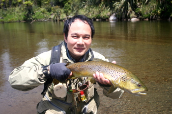

About The Author
Let me introduce myself....

Name: Takeshi "GO" Ito
Date of Birth: May 14, 1962
Born in: Toei-chou, Kitashitara-gun, Aichi pref., Japan
Toei-chou is a small town which is famous
for "Amago" and "Ayu" fishing in Japan.
My Profile about fishing.....
In the Spring of 1972, I fished the first "Amago" trout with bait tackle when I was in 4th grade of an elementary school. Three days later, I had caught a big Amago in a small pool near my house. The fish made me a keen fisherman. I can remember the trout and the pool very clearly even now.
In the spring of 1978, I entered Toyota Technical College. At the time, my father presented a set of spinning tackle for me. I've got the first Amago with a spinner. I was fascinated with Lure fishing.
In 1982, I became twenty years old. I found an old bait rod for crucian carp. It was very fine and flexible. So I had an idea that I could make a "Tenkara" fly Rod with the few parts of the rod. "Tenkara" is the name of Japanese traditional style of Fly Fishing. The method does not use a fly reel, it uses only 16 ft. light weight fly line. We used to make our own fly line with nylon monofilament.
In the spring of 1983, I entered Nagaoka University of Technology which is in Niigata Prefecture. There are many good rivers and streams for trout and char fishing in the prefecture. So I joined a fishing club in the university. I enjoyed trout fishing from early spring to late autumn with my friends.
At 1989, I got a job at a civil engineering consulting company, and I had made enough money to get fly fishing tackles finally. I usually go fishing in some mountain streams in the middle part of Japan.
January 1997, I visited the south island of New Zealand. I enjoyed really exciting sight fishing for brown trout in there. The trip changed my whole life.
November 1998, I made my second fishing trip to the west coast of the south island of NZ with my friend. The trip was excellent. I had caught seven fine brown trout in the area. My heart was completely caught by the country.
May 1999, I quit the job and went to Auckland of NZ to study English. March 2000, I started my study about fish biology at the University of Waikato which is in Hamilton city of the north island of NZ. I enjoyed student life and fishing around Hamilton.
January 2003, I came back from NZ, and lived in Toei-cho, my home town.
From May of 2005, I have been living in Toyohashi city.
I will answer any questions about this website.
So please let me know your question by e-mail.
 e-mail : takeshi_go_ito●yahoo.co.jp
e-mail : takeshi_go_ito●yahoo.co.jp
Note: Change the ● to @ , please.
I am waiting an e-mail from you.
Home